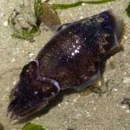
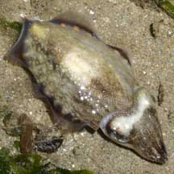

|
|
| cephalopods text index | photo index |
| Phylum Mollusca > Class Cephalopoda > squids and cuttlefishes > Family Sepiidae |
| Glittering
cuttlefish Sepiella inermis Family Sepiidae updated May 2020 Where seen? This small stout cuttlefish edged with iridescent glittering spots is sometimes seen among seagrasses especially on our Northern shores. It is also called the Spineless cuttlefish because its cuttlebone lacks a spine at the tip that many other cuttlefishes have. 'Inermis' in Latin means 'harmless', 'peaceful'. Features: 5-8cm long. Body oval with fins all around the edges, with about 7 reddish patches and glittering iridescent spots or dashes on each side of the body. Short fat arms. Body texture generally smooth and does not form into bumps or pimples. Glittering babies: Females, which are usually bigger than males, lay a single black globular egg capsule, attaching it to a hard surface. What does it eat? The cuttlefish hunts fishes, crustaceans and other cephalopods. Human uses: The cuttlefish is an important commercial seafood harvested by trawls, nets with lights at night. There has been efforts to aquaculture this cuttlefish. |
 Changi, May 05 |
 The same cuttlefish rapidly changing ... Changi, May 06 |
 ... colours and patterns. Changi, May 06 |
| Glittering cuttlefishes on Singapore shores |
On wildsingapore
flickr
|
| Other sightings on Singapore shores |
| Acknowledgement Grateful thanks to Tay Ywee Chieh for identifying this cuttlefish. Links
|